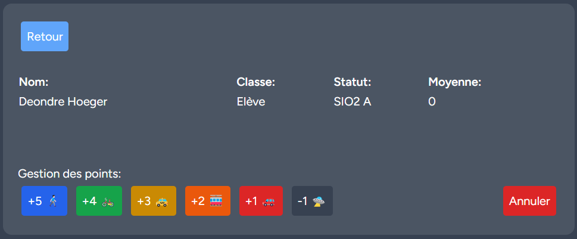

Site Transport
Application Web Fullstack
Description du projet
Cette application web permet à un professeur, via son compte, de gérer une classe en ajoutant des élèves et de leur attribuer des points en fonction du moyen de transport utilisé pour venir en cours.
Caractéristiques
| Catégorie | Détails |
|---|---|
| Technologies | Laravel, Tailwind, MySQL |
| Durée | 2 mois (2025) |
| Fonctionnalités clés |
|
| Difficultés rencontrées |
|
| Compétences acquises |
|
